<!DOCTYPE html>
<html lang="en">

<head>
  <meta charset="utf-8" />
   
  <meta name="keywords" content="生活,旅行,思考,代码,博客" />
   
  <meta name="description" content="一座孤岛" />
  
  <meta name="viewport" content="width=device-width, initial-scale=1, maximum-scale=1" />
  <title>
    《APUE》ch9——进程关系 |  akaQin&#39;s Blog
  </title>
  <meta name="generator" content="hexo-theme-yilia-plus">
  
  <link rel="shortcut icon" href="/favicon.ico" />
  
  
<link rel="stylesheet" href="/css/style.css">

  
<script src="/js/pace.min.js"></script>


  

  

<link rel="alternate" href="/atom.xml" title="akaQin's Blog" type="application/atom+xml">
</head>

</html>

<body>
  <div id="app">
    <main class="content">
      <section class="outer">
  <article id="post-《APUE》ch9——进程关系" class="article article-type-post" itemscope
  itemprop="blogPost" data-scroll-reveal>

  <div class="article-inner">
    
    <header class="article-header">
       
<h1 class="article-title sea-center" style="border-left:0" itemprop="name">
  《APUE》ch9——进程关系
</h1>
  

    </header>
    

    
    <div class="article-meta">
      <a href="/2020/02/16/%E3%80%8AAPUE%E3%80%8Bch9%E2%80%94%E2%80%94%E8%BF%9B%E7%A8%8B%E5%85%B3%E7%B3%BB/" class="article-date">
  <time datetime="2020-02-16T07:53:47.000Z" itemprop="datePublished">2020-02-16</time>
</a>
      
  <div class="article-category">
    <a class="article-category-link" href="/categories/%E3%80%8AAPUE%E3%80%8B%E7%AC%94%E8%AE%B0/">《APUE》笔记</a>
  </div>

      
      
<div class="word_count">
    <span class="post-time">
        <span class="post-meta-item-icon">
            <i class="ri-quill-pen-line"></i>
            <span class="post-meta-item-text"> 字数统计:</span>
            <span class="post-count">2.5k字</span>
        </span>
    </span>

    <span class="post-time">
        &nbsp; | &nbsp;
        <span class="post-meta-item-icon">
            <i class="ri-book-open-line"></i>
            <span class="post-meta-item-text"> 阅读时长≈</span>
            <span class="post-count">8分钟</span>
        </span>
    </span>
</div>

      
    </div>
    

    
    
    <div class="tocbot"></div>


    

    
    <div class="article-entry" itemprop="articleBody">
      


      

      
      <h2 id="终端登录"><a href="#终端登录" class="headerlink" title="终端登录"></a>终端登录</h2><p>我们现在描述的过程用于经由终端登录至UNIX系统。该过程几乎与所使用的终端类型无关，可以是基于字符的终端、仿真基于字符终端的图形终端，或者运行窗口系统的图形终端。</p>
<h3 id="BSD终端登录"><a href="#BSD终端登录" class="headerlink" title="BSD终端登录"></a>BSD终端登录</h3><p>系统管理者创建通常名为/etc/ttys的文件，其中每个终端设备都有一行，说明设备名和传到getty程序的参数。当系统自举时，内核创建进程ID为1的进程，也就是init进程。<br>init进程使系统进入多用户模式。init读取文件/etc/ttys，对每一个允许登录的终端设备，init调用一次fork，它所生成的子进程则exec getty程序。<br>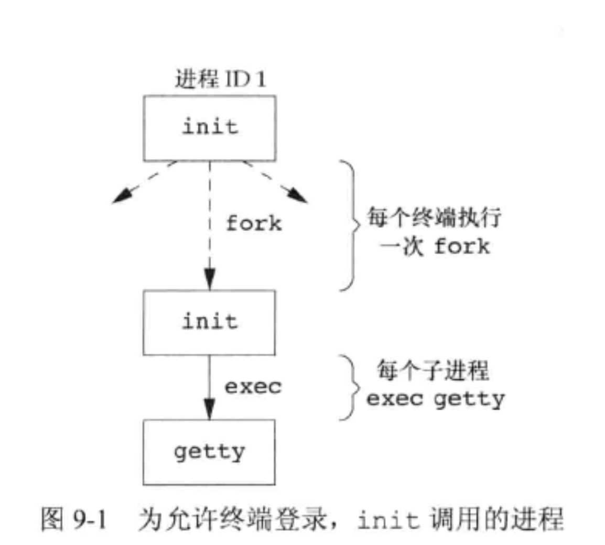</p>
<a id="more"></a>

<p>getty对终端设备调用open函数，以读、写方式将终端打开。如果设备是调制解调器，则open可能会在设备驱动程序中滞留，直到用户拨号调制解调器，并且线路被接通。<br>一旦设备被打开，则文件描述符0、1、2就被设置到该设备，然后getty输出“login：”之类的信息，等待用户键入用户名。<br>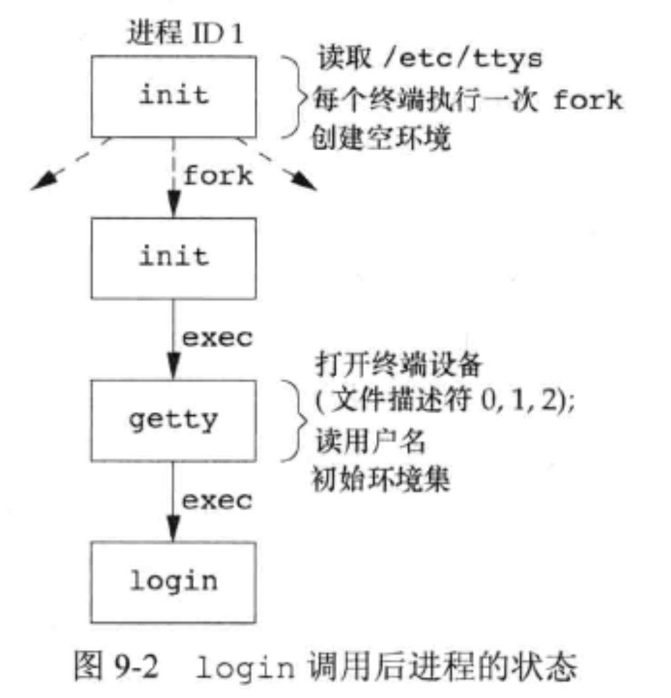</p>
<p>因为init进程具有超级用户特权，所以图9-2中的所有进程都有超级用户特权。图9-2中的下面三个进程ID相同，exec不会改变进程ID，父进程ID都为1。</p>
<p>如果用户正确登录，login将完成下列工作：</p>
<ul>
<li>将当前工作目录改为该用户的起始目录（chdir）。</li>
<li>调用chown更改该终端的所有权，使登录用户成为它的所有者。</li>
<li>将对该终端设备的访问权限改变成“用户读和写”。</li>
<li>调用 setgid 及 initgroups 设置进程的组ID。</li>
<li>用 login 得到的所有信息初始化环境：起始目录（HOME）、shell（SHELL）、用户名（USER和LOGNAME）以及一个系统默认路径（PATH）。</li>
<li>login 进程更改为登录用户的用户ID（setuid）并调用该用户登录的shell，其方式类似于：<figure class="highlight c"><table><tr><td class="gutter"><pre><span class="line">1</span><br></pre></td><td class="code"><pre><span class="line">execl(<span class="string">"/bin/sh"</span>, <span class="string">"-sh"</span>, (<span class="keyword">char</span> *)<span class="number">0</span>);</span><br></pre></td></tr></table></figure></li>
<li>其他任务（打印日期消息文件、检查新邮件等）</li>
</ul>
<p>至此，登录用户的登录shell开始运行。其父进程ID是init进程，所以此登录shell终止时，init会等到通知（接到SIGCHLD信号），它会对该终端重复全部上述过程。登录shell的文件描述符0、1和2设置为终端设备。<br>   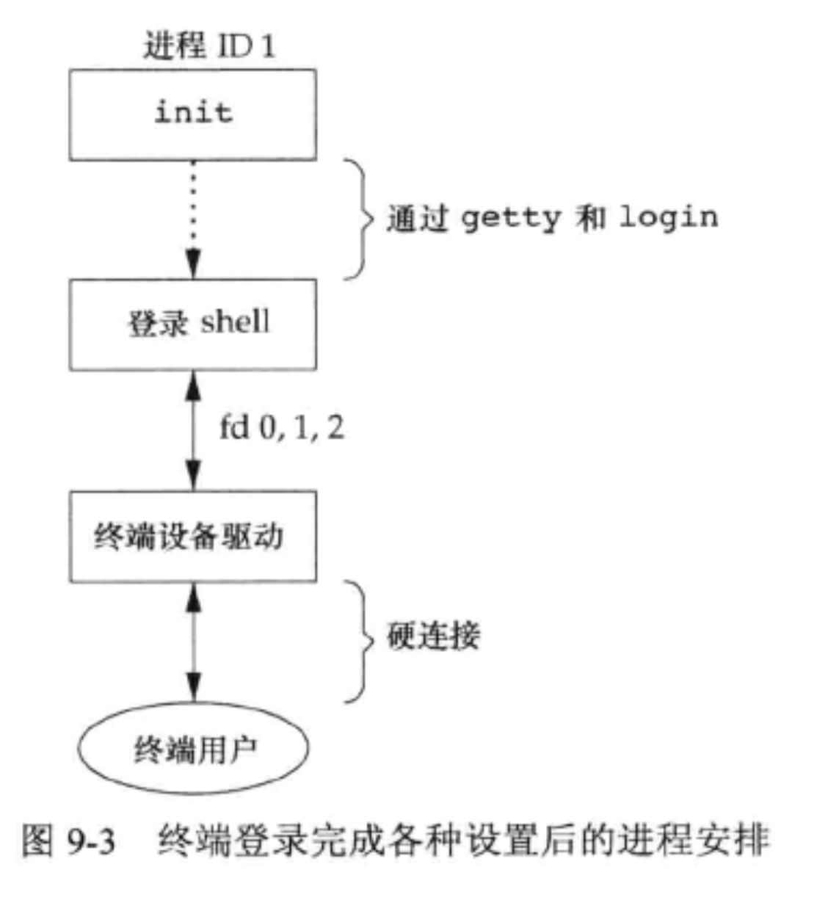</p>
<h3 id="Mac-OS-X-终端登录"><a href="#Mac-OS-X-终端登录" class="headerlink" title="Mac OS X 终端登录"></a>Mac OS X 终端登录</h3><p>Mac OS X部分地基于FreeBSD，所以其终端登录进程与BSD基本一致，不同之处在于：</p>
<ul>
<li>init的工作是由launchd完成的。</li>
<li>一开始提供的就是图形终端</li>
</ul>
<h3 id="Linux-终端登录"><a href="#Linux-终端登录" class="headerlink" title="Linux 终端登录"></a>Linux 终端登录</h3><p>Linux的终端登录过程非常类似于BSD。Linux login命令是从4.3BSD login命令派生出来的。登录过程的主要区别在于说明终端配置的方式。</p>
<h2 id="网络登录"><a href="#网络登录" class="headerlink" title="网络登录"></a>网络登录</h2><p>通过串行终端登录至系统和由网络登录至系统两者之间的主要（物理上的）区别是：网络登录时，在终端和计算机之间的连接不再是点到点的。在网络登录情况下，login仅仅是一种可用的服务，这与其他网络服务（如FTP、SMTP）的性质相同。<br>所有登录都经由内核的网络接口驱动程序（如以太网驱动程序），而且事先并不知道会有多少这样的登录。因此必须等待一个网络请求的到达，而不是使一个进程等待每一个可能的登录。</p>
<h3 id="BSD网络登录"><a href="#BSD网络登录" class="headerlink" title="BSD网络登录"></a>BSD网络登录</h3><p>在BSD中，有一个inetd进程，它等待大多数网络连接。作为系统启动的一部分，init调用一个shell，使其执行shell脚本/etc/rc。由此shell脚本启动一个守护进程inetd。一旦此shell脚本终止，inetd的父进程就变成init。inetd等待TCP/IP连接请求到达主机，而当一个连接请求到达时，它执行一次fork，然后生成的子进程exec适当的程序。</p>
<p>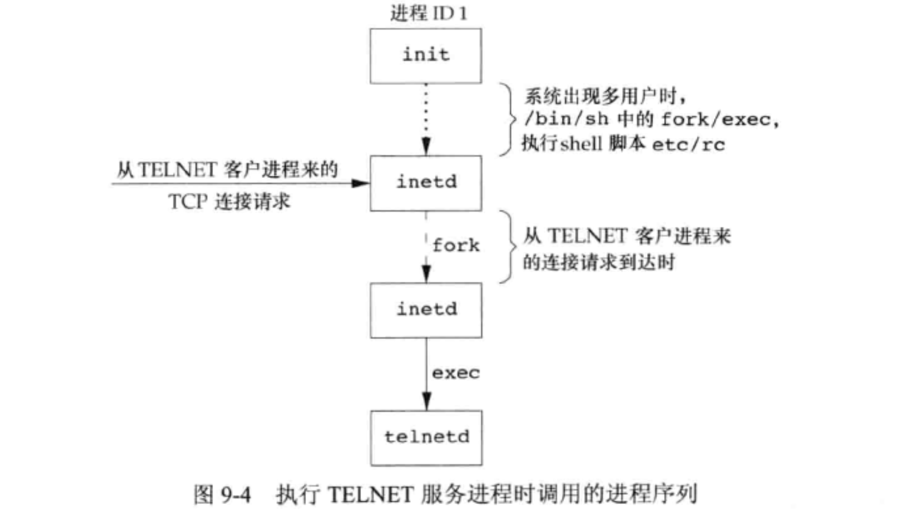</p>
<p></p>
<h2 id="进程组"><a href="#进程组" class="headerlink" title="进程组"></a>进程组</h2><p>每个进程除了有一进程ID之外，还属于一个进程组。<br>进程组是一个或多个进程的集合。通常，它们是同一作业中结合起来的，同一进程组中的各进程接收来自同一终端的各种信号。每个进程组有一个唯一的进程组ID——它是一个正整数，并可存放在pid_t数据类型中。</p>
<figure class="highlight c"><table><tr><td class="gutter"><pre><span class="line">1</span><br><span class="line">2</span><br><span class="line">3</span><br><span class="line">4</span><br></pre></td><td class="code"><pre><span class="line"><span class="meta">#<span class="meta-keyword">include</span> <span class="meta-string">&lt;unistd.h&gt;</span></span></span><br><span class="line"></span><br><span class="line"><span class="function"><span class="keyword">pid_t</span> <span class="title">getpgrp</span><span class="params">(<span class="keyword">void</span>)</span></span>; <span class="comment">//获取调用进程的组ID</span></span><br><span class="line"><span class="function"><span class="keyword">pid_t</span> <span class="title">getpgid</span><span class="params">(<span class="keyword">pid_t</span> pid)</span></span>; <span class="comment">//获取指定pid的进程组ID</span></span><br></pre></td></tr></table></figure>
<p>每个进程组有一个组长进程。组长进程的进程组ID等于其进程ID。<br>进程组组长可以创建一个进程组，创建该组中的进程，然后终止。只要在某个进程组中有一个进程存在，该进程组就存在，这与其组长进程是否终止无关。从进程组创建开始到其中最后一个进程离开为止的时间区间称为进程组的生命周期。某个进程组的最后一个进程可以终止，也可以转移到另一个进程组。</p>
<figure class="highlight c"><table><tr><td class="gutter"><pre><span class="line">1</span><br><span class="line">2</span><br><span class="line">3</span><br></pre></td><td class="code"><pre><span class="line"><span class="meta">#<span class="meta-keyword">include</span> <span class="meta-string">&lt;unistd.h&gt;</span></span></span><br><span class="line"></span><br><span class="line"><span class="function"><span class="keyword">pid_t</span> <span class="title">setpgid</span><span class="params">(<span class="keyword">pid_t</span> pid, <span class="keyword">pid_t</span> pgid)</span></span>; <span class="comment">// 设置pid为pgid组的组长</span></span><br></pre></td></tr></table></figure>
<p>一个进程只能为它自己或紫的子进程设置进程组ID。在它的子进程调用了exec后，它就不能再更改该子进程的组ID了。</p>
<h2 id="会话"><a href="#会话" class="headerlink" title="会话"></a>会话</h2><p>会话（session）是一个或多个进程组的集合。<br>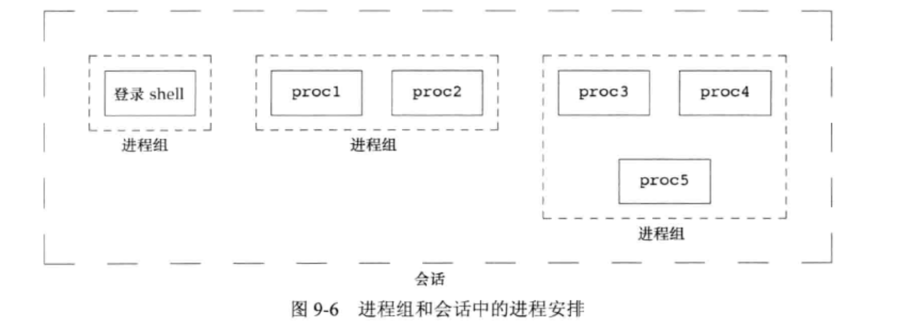<br>进程调用<code>setsid</code>函数建立一个新会话。</p>
<figure class="highlight c"><table><tr><td class="gutter"><pre><span class="line">1</span><br><span class="line">2</span><br><span class="line">3</span><br></pre></td><td class="code"><pre><span class="line"><span class="meta">#<span class="meta-keyword">include</span> <span class="meta-string">&lt;unistd.h&gt;</span></span></span><br><span class="line"></span><br><span class="line"><span class="function"><span class="keyword">pid_t</span> <span class="title">setsid</span><span class="params">(<span class="keyword">void</span>)</span></span>;</span><br></pre></td></tr></table></figure>
<p>如果调用此函数的进程不是一个进程组的组长，则此函数创建一个新会话。具体发生以下3件事：</p>
<ol>
<li>该进程变成新会话的 <strong>会话首进程（session leader）</strong>。此时，该进程是新会话中的唯一进程。</li>
<li>该进程成为一个新进程组的组长进程。新进程组ID是该调用进程的进程ID。</li>
<li>该进程没有控制终端。如果调用setsid之前由，那么这种联系也被切断。</li>
</ol>
<h2 id="控制终端"><a href="#控制终端" class="headerlink" title="控制终端"></a>控制终端</h2><p>会话和进程组还有一些其他特性：</p>
<ul>
<li>一个会话可以有一个 <strong>控制终端（controlling terminal）</strong>。这通常是终端设备（在终端登录情况下）或伪终端设备（在网络登录情况下）。</li>
<li>建立与控制终端连接的 <strong>会话首进程</strong> 被称为 <strong>控制进程（controlling process）</strong>。</li>
<li>一个会话中的几个进程组可被分成一个 <strong>前台进程组（foreground process group）</strong> 以及一个或多个 <strong>后台进程组（background process group）</strong>。</li>
<li>如果一个会话有一个控制终端，则它有一个前台进程组，其他进程组为后台进程组。</li>
<li>无论何时键入终端的中断键（通常是Delete或Ctrl+C），都会将中断信号发送至前台进程组的所有进程。</li>
<li>无论何时键入终端的退出键（通常是Ctrl+\）,都会将退出信号发送至前台进程组的所有进程。</li>
<li>如果终端接口检测到调制解调器（或网络）已经断开连接，则将挂断信号发送至控制进程（会话首进程）。<br>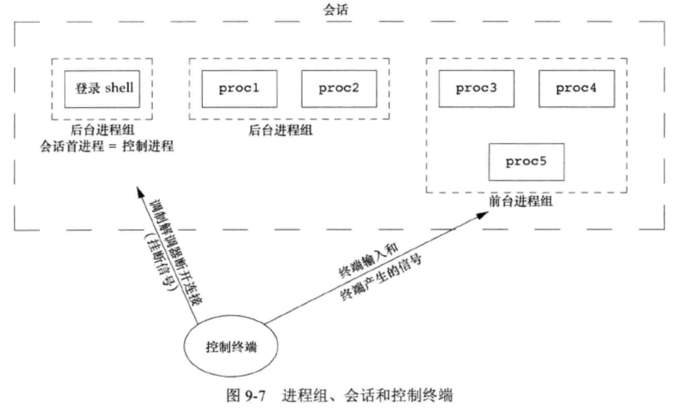</li>
</ul>
<h3 id="相关函数"><a href="#相关函数" class="headerlink" title="相关函数"></a>相关函数</h3><figure class="highlight c"><table><tr><td class="gutter"><pre><span class="line">1</span><br><span class="line">2</span><br><span class="line">3</span><br><span class="line">4</span><br><span class="line">5</span><br><span class="line">6</span><br><span class="line">7</span><br></pre></td><td class="code"><pre><span class="line"><span class="meta">#<span class="meta-keyword">include</span> <span class="meta-string">&lt;unistd.h&gt;</span></span></span><br><span class="line"></span><br><span class="line"><span class="function"><span class="keyword">pid_t</span> <span class="title">tcgetpgrp</span><span class="params">(<span class="keyword">int</span> fd)</span></span>; <span class="comment">//返回前台进程组ID，它与fd上打开的终端相关联</span></span><br><span class="line"></span><br><span class="line"><span class="function"><span class="keyword">int</span> <span class="title">tcsetpgrp</span><span class="params">(<span class="keyword">int</span> fd, <span class="keyword">pid_t</span> pgrpid)</span></span>; <span class="comment">//将前台进程组ID设置为 pgrpid</span></span><br><span class="line"></span><br><span class="line"><span class="function"><span class="keyword">pid_t</span> <span class="title">tcgetsid</span><span class="params">(<span class="keyword">int</span> fd)</span></span>; <span class="comment">//获得会话首进程的进程组ID（等价于会话ID）</span></span><br></pre></td></tr></table></figure>

<h2 id="作业控制"><a href="#作业控制" class="headerlink" title="作业控制"></a>作业控制</h2><p>用户可以在前台或后台启动一个作业。一个作业只是几个进程的集合。<br>作业控制允许在一个终端上启动多个作业（进程组），它控制哪一个作业可以访问该终端以及哪些作业在后台运行。</p>
<p>有3个特殊字符会使终端程序产生信号，发送给前台进程组。它们是：</p>
<ul>
<li>中断字符（一般采用Delete或Ctrl+C）产生SIGINT</li>
<li>退出字符（一般采用Ctrl+\）产生SIGQUIT</li>
<li>挂起字符（一般采用Ctrl+Z）产生SIGSTP</li>
</ul>
<p>只有前台作业可以接收终端输入或向终端输出。<br>如果后台作业尝试读终端，终端驱动程序会向后台作业发送信号SIGTTIN，该信号通常会停止后台。然后通知用户。<br>后台作业能否输出到控制终端与配置有关。<br>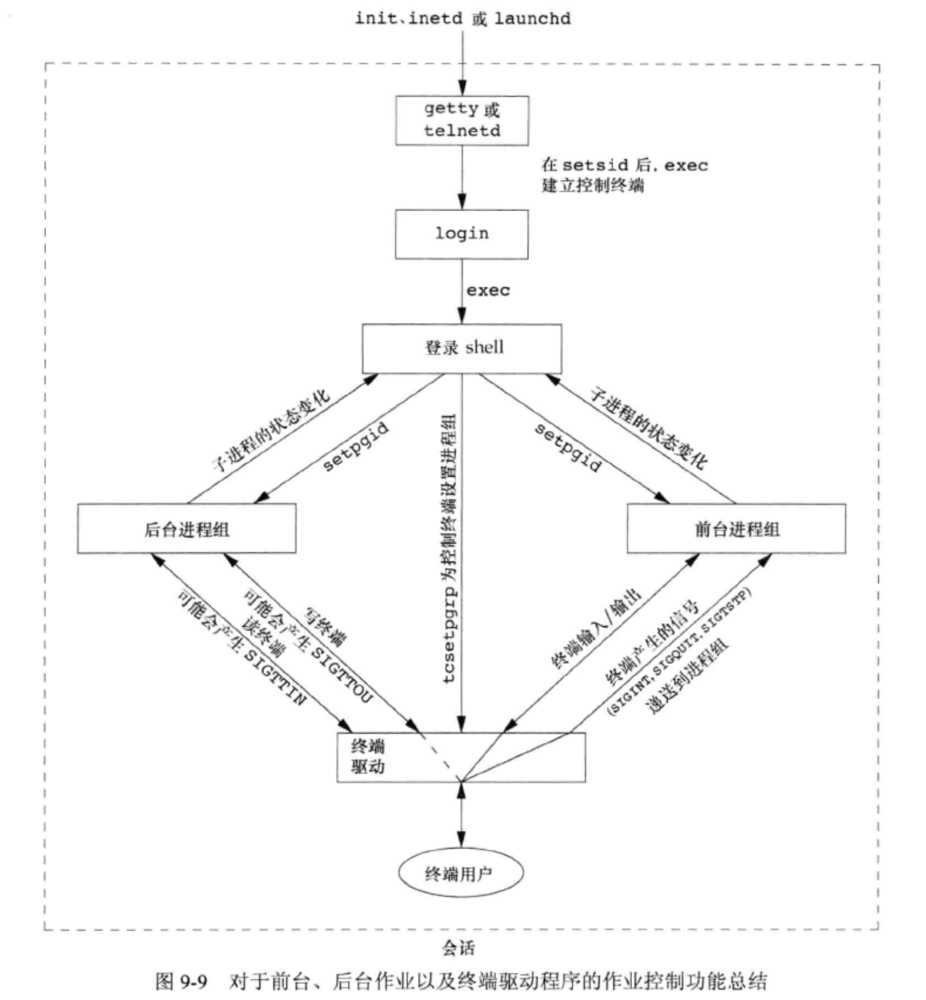</p>
<h2 id="shell执行程序"><a href="#shell执行程序" class="headerlink" title="shell执行程序"></a>shell执行程序</h2><p>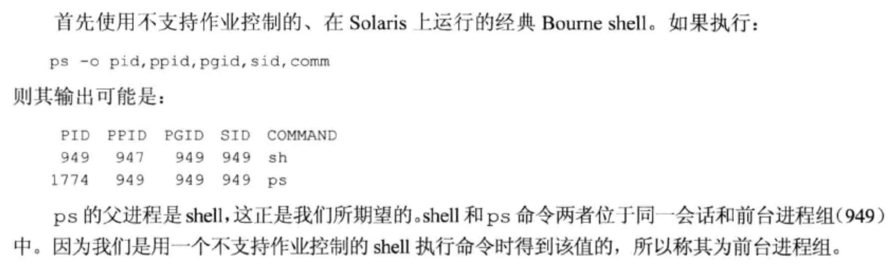<br><strong>在不支持作业控制的shell中，管道中的最后一个进程是shell的子进程，管道中的其他进程是最后一个进程的子进程。从中可以看出，shell fork一个它自身的副本，然后此副本再为管道中的每条命令各fork一个进程。</strong><br>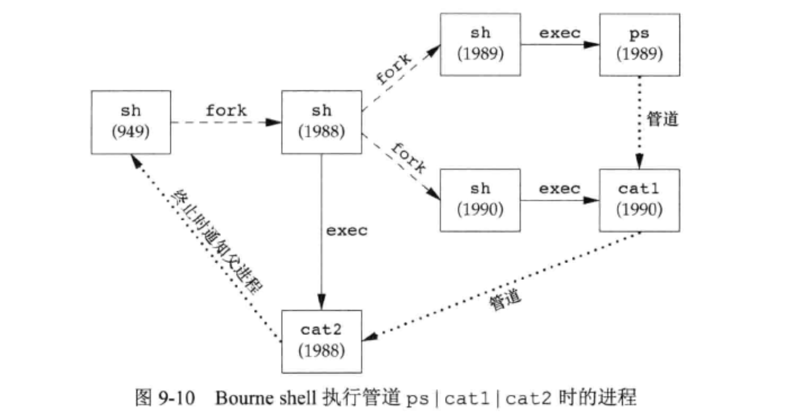<br>有作业控制时，后台作业被放在后台进程组，如果后台作业试图读控制终端，则会产生信号SIGTTIN。<br>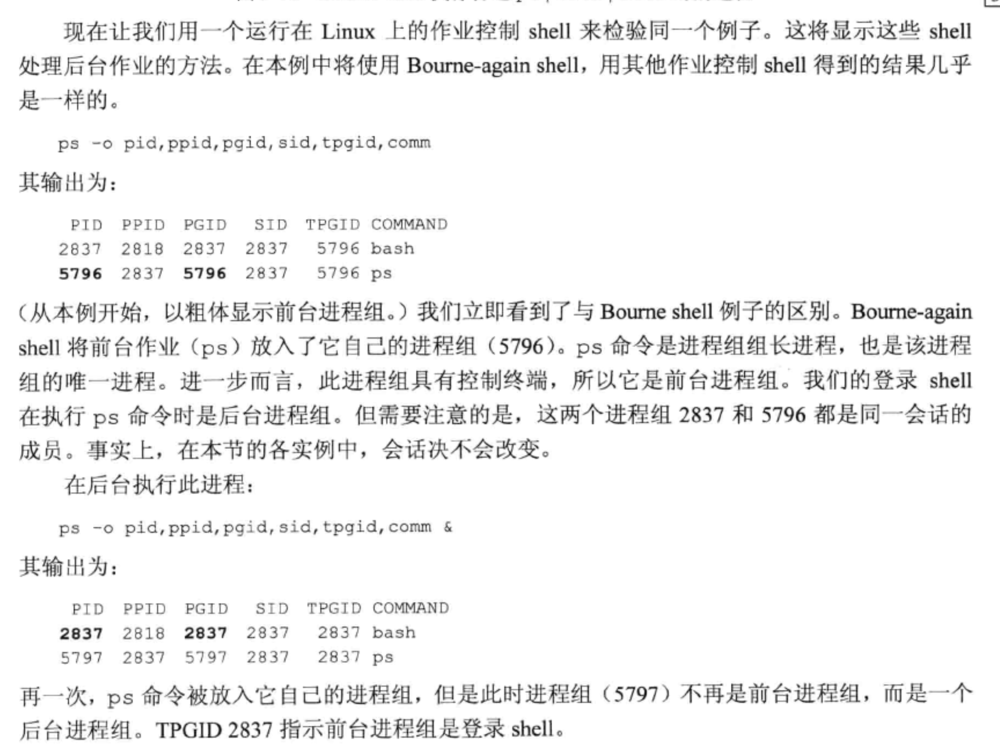<br>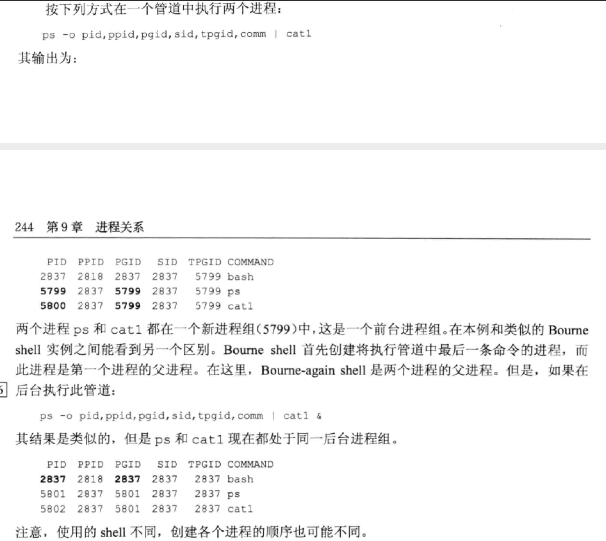</p>
<h2 id="孤儿进程组"><a href="#孤儿进程组" class="headerlink" title="孤儿进程组"></a>孤儿进程组</h2><p>该组中每个成员的父进程要么是该组的一个成员，要么不是该组所属会话的成员。另一种描述可以是：一个进程组不是孤儿进程组的条件是——该组中有一个进程，其父进程属于同一会话的另一个组中。如果进程组不是孤儿进程组，那么在属于同一会话的另一个组中的父进程就有机会重新启动该组中停止的进程。<br>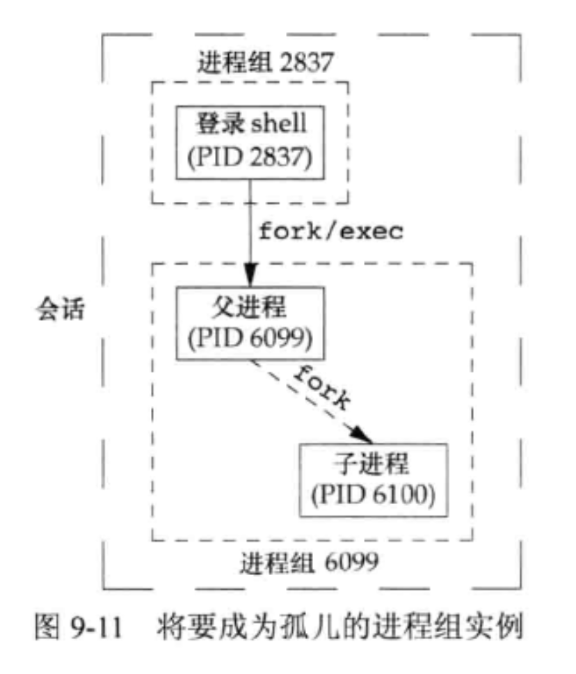<br>因为在父进程终止后，进程组包含一个停止的进程，进程组称为孤儿进程组，POSIX。1要求向新孤儿进程组中处于停止状态的每一个进程发送挂断信号（SIGHUP），接着又向其发送继续信号（SIGCONT）。<br>在处理了挂断信号后，子进程继续。对挂断信号的系统默认动作是终止该进程。</p>
<h2 id="FreeBSD实现"><a href="#FreeBSD实现" class="headerlink" title="FreeBSD实现"></a>FreeBSD实现</h2><p>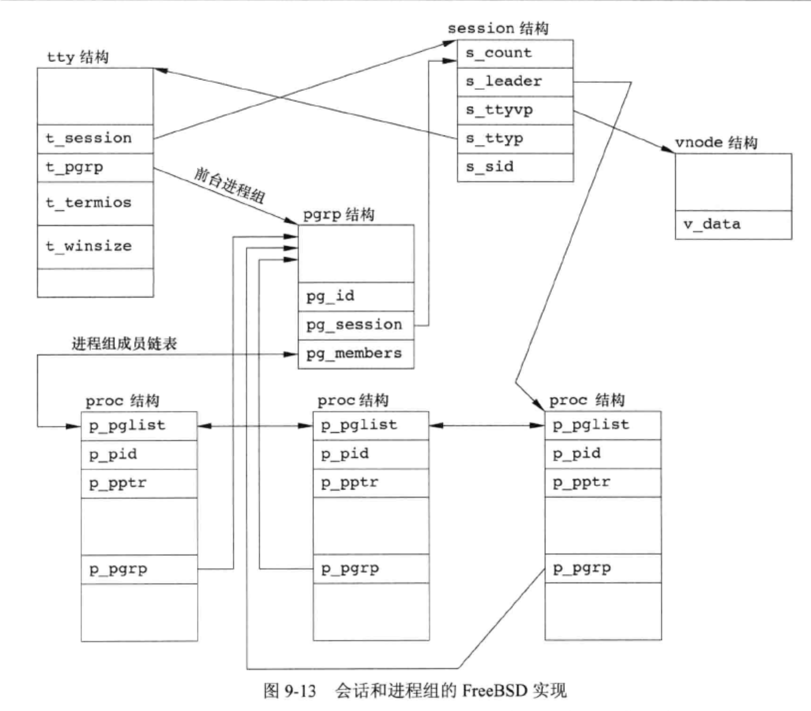<br>每个会话都分配一个session结构。在调用setsid时，在内核分配一个心得session结构。</p>

      
      <!-- reward -->
      
      <div id="reward-btn">
        打赏
      </div>
      
    </div>
    

      <!-- copyright -->
      
        <div class="declare">
          <ul class="post-copyright">
            <li>
              <i class="ri-copyright-line"></i>
              <strong>版权声明： </strong s>
              本博客所有文章除特别声明外，均采用 <a href="https://www.apache.org/licenses/LICENSE-2.0.html" rel="external nofollow"
                target="_blank">Apache License 2.0</a> 许可协议。转载请注明出处！
            </li>
          </ul>
        </div>
        
    <footer class="article-footer">
      
          
<div class="share-btn">
      <span class="share-sns share-outer">
        <i class="ri-share-forward-line"></i>
        分享
      </span>
      <div class="share-wrap">
        <i class="arrow"></i>
        <div class="share-icons">
          
          <a class="weibo share-sns" href="javascript:;" data-type="weibo">
            <i class="ri-weibo-fill"></i>
          </a>
          <a class="weixin share-sns wxFab" href="javascript:;" data-type="weixin">
            <i class="ri-wechat-fill"></i>
          </a>
          <a class="qq share-sns" href="javascript:;" data-type="qq">
            <i class="ri-qq-fill"></i>
          </a>
          <a class="douban share-sns" href="javascript:;" data-type="douban">
            <i class="ri-douban-line"></i>
          </a>
          <!-- <a class="qzone share-sns" href="javascript:;" data-type="qzone">
            <i class="icon icon-qzone"></i>
          </a> -->
          
          <a class="facebook share-sns" href="javascript:;" data-type="facebook">
            <i class="ri-facebook-circle-fill"></i>
          </a>
          <a class="twitter share-sns" href="javascript:;" data-type="twitter">
            <i class="ri-twitter-fill"></i>
          </a>
          <a class="google share-sns" href="javascript:;" data-type="google">
            <i class="ri-google-fill"></i>
          </a>
        </div>
      </div>
</div>

<div class="wx-share-modal">
    <a class="modal-close" href="javascript:;"><i class="ri-close-circle-line"></i></a>
    <p>扫一扫，分享到微信</p>
    <div class="wx-qrcode">
      
    </div>
</div>

<div id="share-mask"></div>
      
      
  <ul class="article-tag-list" itemprop="keywords"><li class="article-tag-list-item"><a class="article-tag-list-link" href="/tags/process/" rel="tag">process</a></li></ul>


    </footer>

  </div>

  
  
  <nav class="article-nav">
    
      <a href="/2020/02/23/%E4%B8%BA%E4%BB%80%E4%B9%88calloc%E4%BC%9A%E6%AF%94malloc-memset%E5%BF%AB/" class="article-nav-link">
        <strong class="article-nav-caption">上一篇</strong>
        <div class="article-nav-title">
          
            为什么calloc会比malloc+memset快
          
        </div>
      </a>
    
    
      <a href="/2020/02/11/%E3%80%8AAPUE%E3%80%8Bch8%E2%80%94%E2%80%94%E8%BF%9B%E7%A8%8B%E6%8E%A7%E5%88%B6/" class="article-nav-link">
        <strong class="article-nav-caption">下一篇</strong>
        <div class="article-nav-title">《APUE》ch8——进程控制</div>
      </a>
    
  </nav>


  

  
  
<!-- valine评论 -->
<div id="vcomments-box">
    <div id="vcomments">
    </div>
</div>
<script src="//cdn1.lncld.net/static/js/3.0.4/av-min.js"></script>
<script src='https://cdn.jsdelivr.net/npm/valine@1.3.10/dist/Valine.min.js'></script>
<script>
    new Valine({
        el: '#vcomments',
        app_id: 'X2Yrs2HgM1dBr94LBlfP7Jsj-gzGzoHsz',
        app_key: 'x2WQjNYF5CQseEAN1iSqXOLQ',
        path: window.location.pathname,
        notify: 'true',
        verify: 'false',
        avatar: 'mp',
        placeholder: '给我的文章加点评论吧~',
        recordIP: true
    });
    const infoEle = document.querySelector('#vcomments .info');
    if (infoEle && infoEle.childNodes && infoEle.childNodes.length > 0) {
        infoEle.childNodes.forEach(function (item) {
            item.parentNode.removeChild(item);
        });
    }
</script>
<style>
    #vcomments-box {
        padding: 5px 30px;
    }

    @media screen and (max-width: 800px) {
        #vcomments-box {
            padding: 5px 0px;
        }
    }

    #vcomments-box #vcomments {
        background-color: #fff;
    }

    .v .vlist .vcard .vh {
        padding-right: 20px;
    }

    .v .vlist .vcard {
        padding-left: 10px;
    }
</style>

  

  
  
  

</article>

</section>
      <footer class="footer">
  <div class="outer">
    <ul class="list-inline">
      <li>
        &copy;
        2019-2020
        Aaron Qin
      </li>
      <li>
        
      </li>
    </ul>
    <ul class="list-inline">
      <li>
        
        
        <span>
  <i>PV:<span id="busuanzi_value_page_pv"></span></i>
  <i>UV:<span id="busuanzi_value_site_uv"></span></i>
</span>
        
      </li>
      <li>
        <!-- cnzz统计 -->
        
      </li>
    </ul>
  </div>
</footer>
    <div class="to_top">
        <div class="totop" id="totop">
  <i class="ri-arrow-up-line"></i>
</div>
      </div>
    </main>
      <aside class="sidebar">
        <button class="navbar-toggle"></button>
<nav class="navbar">
  
  <div class="logo">
    <a href="/"></a>
  </div>
  
  <ul class="nav nav-main">
    
    <li class="nav-item">
      <a class="nav-item-link" href="/">主页</a>
    </li>
    
    <li class="nav-item">
      <a class="nav-item-link" href="/archives">归档</a>
    </li>
    
    <li class="nav-item">
      <a class="nav-item-link" href="/categories">分类</a>
    </li>
    
    <li class="nav-item">
      <a class="nav-item-link" href="/tags">标签</a>
    </li>
    
    <li class="nav-item">
      <a class="nav-item-link" href="/about/me">关于我</a>
    </li>
    
  </ul>
</nav>
<nav class="navbar navbar-bottom">
  <ul class="nav">
    <li class="nav-item">
      
      <a class="nav-item-link nav-item-search"  title="Search">
        <i class="ri-search-line"></i>
      </a>
      
      
      <a class="nav-item-link" target="_blank" href="/atom.xml" title="RSS Feed">
        <i class="ri-rss-line"></i>
      </a>
      
    </li>
  </ul>
</nav>
<div class="search-form-wrap">
  <div class="local-search local-search-plugin">
  <input type="search" id="local-search-input" class="local-search-input" placeholder="Search...">
  <div id="local-search-result" class="local-search-result"></div>
</div>
</div>
      </aside>
      <div id="mask"></div>

<!-- #reward -->
<div id="reward">
  <span class="close"><i class="ri-close-line"></i></span>
  <p class="reward-p"><i class="ri-cup-line"></i>请我喝杯咖啡吧~</p>
  <div class="reward-box">
    
    <div class="reward-item">
      
      <span class="reward-type">支付宝</span>
    </div>
    
    
    <div class="reward-item">
      
      <span class="reward-type">微信</span>
    </div>
    
  </div>
</div>
      
<script src="/js/jquery-2.0.3.min.js"></script>


<script src="/js/jquery.justifiedGallery.min.js"></script>


<script src="/js/lazyload.min.js"></script>


<script src="/js/busuanzi-2.3.pure.min.js"></script>


<script src="/js/share.js"></script>


<script src="/fancybox/jquery.fancybox.min.js"></script>


<script>
  try {
    var typed = new Typed("#subtitle", {
    strings: ['面朝大海，春暖花开','愿你一生努力，一生被爱','想要的都拥有，得不到的都释怀'],
    startDelay: 0,
    typeSpeed: 200,
    loop: true,
    backSpeed: 100,
    showCursor: true
    });
  } catch (err) {
  }
  
</script>


<script src="/js/tocbot.min.js"></script>

<script>
  // Tocbot_v4.7.0  http://tscanlin.github.io/tocbot/
  tocbot.init({
    tocSelector: '.tocbot',
    contentSelector: '.article-entry',
    headingSelector: 'h1, h2, h3, h4, h5, h6',
    hasInnerContainers: true,
    scrollSmooth: true,
    scrollContainer:'main',
    positionFixedSelector: '.tocbot',
    positionFixedClass: 'is-position-fixed',
    fixedSidebarOffset: 'auto',
    onClick: (e) => {
      $('.toc-link').removeClass('is-active-link');
      $(`a[href=${e.target.hash}]`).addClass('is-active-link');
      $(e.target.hash).scrollIntoView();
      return false;
    }
  });
</script>


<script>
  var ayerConfig = {
    mathjax: false
  }
</script>


<script src="/js/ayer.js"></script>


<script src="https://cdn.jsdelivr.net/npm/jquery-modal@0.9.2/jquery.modal.min.js"></script>
<link rel="stylesheet" href="https://cdn.jsdelivr.net/npm/jquery-modal@0.9.2/jquery.modal.min.css">


<!-- Root element of PhotoSwipe. Must have class pswp. -->
<div class="pswp" tabindex="-1" role="dialog" aria-hidden="true">

    <!-- Background of PhotoSwipe. 
         It's a separate element as animating opacity is faster than rgba(). -->
    <div class="pswp__bg"></div>

    <!-- Slides wrapper with overflow:hidden. -->
    <div class="pswp__scroll-wrap">

        <!-- Container that holds slides. 
            PhotoSwipe keeps only 3 of them in the DOM to save memory.
            Don't modify these 3 pswp__item elements, data is added later on. -->
        <div class="pswp__container">
            <div class="pswp__item"></div>
            <div class="pswp__item"></div>
            <div class="pswp__item"></div>
        </div>

        <!-- Default (PhotoSwipeUI_Default) interface on top of sliding area. Can be changed. -->
        <div class="pswp__ui pswp__ui--hidden">

            <div class="pswp__top-bar">

                <!--  Controls are self-explanatory. Order can be changed. -->

                <div class="pswp__counter"></div>

                <button class="pswp__button pswp__button--close" title="Close (Esc)"></button>

                <button class="pswp__button pswp__button--share" style="display:none" title="Share"></button>

                <button class="pswp__button pswp__button--fs" title="Toggle fullscreen"></button>

                <button class="pswp__button pswp__button--zoom" title="Zoom in/out"></button>

                <!-- Preloader demo http://codepen.io/dimsemenov/pen/yyBWoR -->
                <!-- element will get class pswp__preloader--active when preloader is running -->
                <div class="pswp__preloader">
                    <div class="pswp__preloader__icn">
                        <div class="pswp__preloader__cut">
                            <div class="pswp__preloader__donut"></div>
                        </div>
                    </div>
                </div>
            </div>

            <div class="pswp__share-modal pswp__share-modal--hidden pswp__single-tap">
                <div class="pswp__share-tooltip"></div>
            </div>

            <button class="pswp__button pswp__button--arrow--left" title="Previous (arrow left)">
            </button>

            <button class="pswp__button pswp__button--arrow--right" title="Next (arrow right)">
            </button>

            <div class="pswp__caption">
                <div class="pswp__caption__center"></div>
            </div>

        </div>

    </div>

</div>

<link rel="stylesheet" href="https://cdn.jsdelivr.net/npm/photoswipe@4.1.3/dist/photoswipe.min.css">
<link rel="stylesheet" href="https://cdn.jsdelivr.net/npm/photoswipe@4.1.3/dist/default-skin/default-skin.css">
<script src="https://cdn.jsdelivr.net/npm/photoswipe@4.1.3/dist/photoswipe.min.js"></script>
<script src="https://cdn.jsdelivr.net/npm/photoswipe@4.1.3/dist/photoswipe-ui-default.min.js"></script>

<script>
    function viewer_init() {
        let pswpElement = document.querySelectorAll('.pswp')[0];
        let $imgArr = document.querySelectorAll(('.article-entry img:not(.reward-img)'))

        $imgArr.forEach(($em, i) => {
            $em.onclick = () => {
                // slider展开状态
                // todo: 这样不好，后面改成状态
                if (document.querySelector('.left-col.show')) return
                let items = []
                $imgArr.forEach(($em2, i2) => {
                    let img = $em2.getAttribute('data-idx', i2)
                    let src = $em2.getAttribute('data-target') || $em2.getAttribute('src')
                    let title = $em2.getAttribute('alt')
                    // 获得原图尺寸
                    const image = new Image()
                    image.src = src
                    items.push({
                        src: src,
                        w: image.width || $em2.width,
                        h: image.height || $em2.height,
                        title: title
                    })
                })
                var gallery = new PhotoSwipe(pswpElement, PhotoSwipeUI_Default, items, {
                    index: parseInt(i)
                });
                gallery.init()
            }
        })
    }
    viewer_init()
</script>


<script type="text/javascript" src="https://js.users.51.la/20544303.js"></script>
  </div>
</body>

</html>